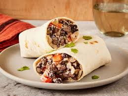

Nana Ritos

A burrito my Nana makes when I come to visit!
This recipe has been passed down to my Nana from her great grandmother. Not only is this
recipe made with love it is made hit the spot when that sudden burt of hunger hits
Whenver I need a quick bite to eat this is my go to food!
Ingredients
- Flour Tortillas
- Ground beef, Bison or Turkey
- Shredded Cheese
- Black Beans
- White Rice
- Cilantro
Steps
- Brown meat (no diddy)
- Boil water, place rice in boiling water for about 4-5mins
- Strain water from rice, add butter, salt and pepper
- Boil Water, place beans in boild water for about 5 minutes until soft
- Chop Veggies
- Wrap contents in as may flour totillas you would like
- Place burritos in air fryer. Set to 350 degrees for 6 minutes until crispy on the outside
- Enjoy